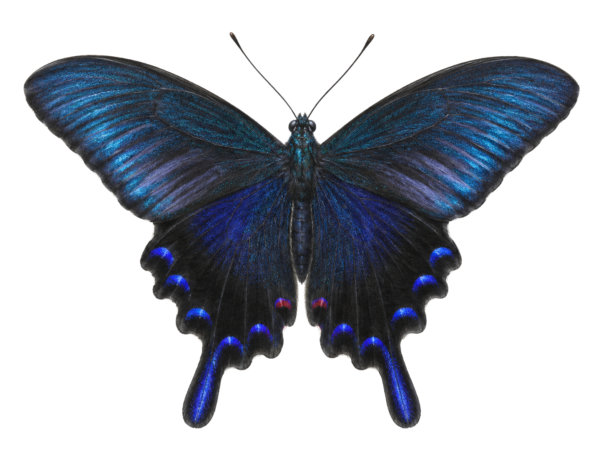

Papilionidae · 009 / 165
ওকিনাওয়া পিকক
Papilio okinawensis

বৈশিষ্ট্য ও শনাক্তকরণ
কালো ডানায় নীলচে-সবুজ ঝিলিক; মধ্য রিউকিউয়ের বৈশিষ্ট্যপূর্ণ প্রজাতি। আলোর কোণে রঙ বদলে দেখায়।
স্ত্রী ও পুরুষের পার্থক্য
স্ত্রীর পেছনের ডানার লালচে-বেগুনি দাগ স্পষ্ট হতে পারে। শুধু ঝিলিক দিয়ে লিঙ্গ নির্ধারণ করবেন না।
আকার
সামনের এক ডানার দৈর্ঘ্য প্রায় 65 mm; সাধারণ নির্দেশক, শুধু ওকিনাওয়ার নমুনার পরিসর নয়।
ওকিনাওয়ার দ্বীপে রেকর্ড
স্থানীয় সূত্রে উল্লিখিত দ্বীপের রেকর্ড নিচের সূত্রে দেখুন। ওকিনাওয়া, ইহেয়া, ইজেনা, কুমে ও কেরামার কয়েকটি দ্বীপের বন ও বনপ্রান্তে বাস করে। ওকিনাওয়ার বাইরে আমামিতেও আছে।
আবাসস্থল
বন ও বনপ্রান্ত; মূল ওকিনাওয়ার উত্তরের বনাঞ্চলসহ।
জীবনযাপন ও অতিরিক্ত তথ্য
ইয়ায়েয়ামার Papilio bianor থেকে আলাদা গোষ্ঠী। শুধু ঝিলিকের তীব্রতা নয়, দ্বীপ ও ডানার গঠনও দেখুন।
শূককীট ও খাদ্য উদ্ভিদ
Rutaceae পরিবারের Tetradium ও শিকুওয়াসা খায়। আমামির সরকারি বিবরণে Zanthoxylum-ও উল্লেখ আছে।
তথ্যসূত্র ও সহায়ক পাঠ
- 沖縄蝶類生態図鑑：オキナワカラスアゲハ
ডেটায় উল্লেখিত সূত্র দেখার তারিখ: 2026-11-10 - 環境省 奄美野生生物保護センター
ডেটায় উল্লেখিত সূত্র দেখার তারিখ: 2026-11-10 - 形態・大きさの補足資料
ডেটায় উল্লেখিত সূত্র দেখার তারিখ: 2026-11-10
তথ্য সরবরাহকৃত ডেটার উপর ভিত্তি করে তৈরি (হালনাগাদ: ১০ নভেম্বর ২০২৬)। কোনো দ্বীপের রেকর্ড সেখানে বর্তমান স্থায়ী বসবাস বা সহজে দেখা পাওয়ার নিশ্চয়তা নয়। চিত্র নির্দেশক; শনাক্তকরণে বাস্তব নমুনা ও সূত্র মিলিয়ে দেখুন।